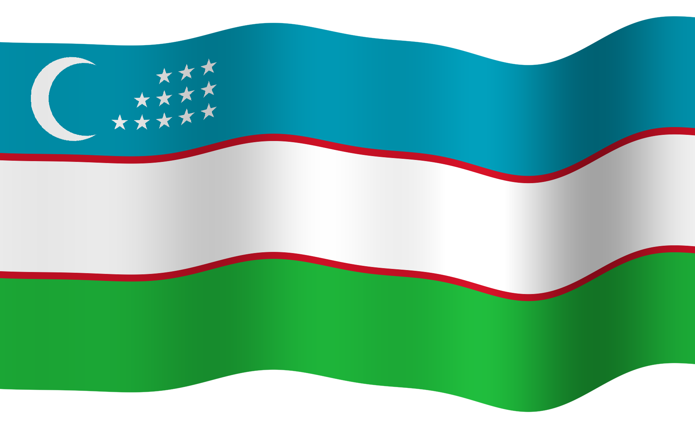

JAHON IQTISODIYOTI VA DIPLOMATIYA UNIVERSITETI
1992
TOSHKENT
Jahon iqtisodiyoti va diplomatiya universiteti
“
O
ʻ
zbek tili – maʼnaviyatimiz poydevori,
do
ʻ
stlik va hamkorlik elchisi
”
nomli bayram tadbirimizga
Xush kelibsiz!
21-oktabr · Oʻzbek tili bayrami kuni